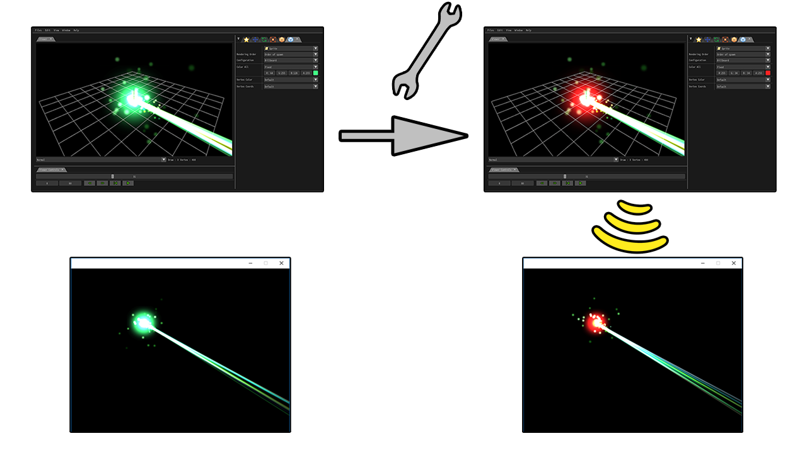

Effekseer For Cocos2d-x
概要
Effekseerは簡単に綺麗なパーティクルエフェクトを作成できるツールです。このライブラリはEffekseerで作成されたパーティクルエフェクトをCocos2d-xで再生できるようにします。 このドキュメントではEffekseerとCocos2d-xの連携について説明します。 ライブラリは複数のソースコードのファイルで構成されており、そのソースコードのファイルをCocos2d-xのプロジェクトに追加することでインストールできます。
対応環境は以下のようになります。
| Windows | OK |
| Mac OS X | OK |
| Linux | Unknown |
| iOS | OK |
| Android | OK |
| WindowsPhone | Unknown |
インストール方法
Players/Cocos2d-x_v3ディレクトリに以下のファイルが存在します。
- Effekseer.cpp
- Effekseer.h
- EffekseerNative.cpp
- EffekseerNative.h
- EffekseerRendererNative.cpp
- EffekseerRendererNative.h
これらのファイルをCocos2d-xのプロジェクトにコピーして、コンパイルする対象に追加してください。
使い方
Samples/ディレクトリにCocos2d-xでEffekseerのパーティクルエフェクトを再生するサンプルがあります。このドキュメントでは基本的な使い方しか説明しないので詳しい使い方はサンプルを見てください。
これらのサンプルには、このライブラリは含まれていないため、 それぞれのサンプルのClasses/Effekseerディレクトリにライブラリのファイルをコピーしてください。 ライブラリをコピーする先のディレクトリの目印としてcopyEffekseerFiles.txtというファイルがコピーする先のディレクトリに存在します。
再生できるファイルについて
Effekseerの標準出力で保存したファイルのみ再生できます。保存されたファイルにはEffekseerのプロジェクトから画像への相対パスが含まれています。 そのため、標準出力で保存されたファイルから画像への相対パスを維持したまま、画像も配置する必要があります。
基本的な再生
Effekseerの標準出力で保存したエフェクトファイルをcocos2d-xで再生します。詳しくはSamples/Simple/に保存されているソースコードを見てください。
Effekseer.hをインクルードします。
#include "Effekseer/Effekseer.h"
cocos2d::Scene、もしくはcocos2d::Layerを継承したクラスのメンバ変数にefk::EffectManager*を加えます。
class HelloWorld : public cocos2d::Scene /*(Layer)*/ {
efk::EffectManager* manager = nullptr;
...
efk::EffectManager*のインスタンスを生成します。
manager = efk::EffectManager::create(Director::getInstance()->getVisibleSize());
エフェクトファイルを読み込みます。
auto effect = efk::Effect::create("Laser01.efk");
エミッターを生成し、パラメーターを設定してシーンに追加します。
auto emitter = efk::EffectEmitter::create(manager); emitter->setEffect(effect); emitter->setPlayOnEnter(true); emitter->setPosition(Vec2(300, 300)); emitter->setScale(20); this->addChild(emitter, 0); // No need (because it uses autorelease after 1.41) //effect->release();
毎フレーム、マネージャーを更新します。
manager->update();
visitを継承して、エフェクトを実際に描画する処理を追加します。
void HelloWorld::visit(
cocos2d::Renderer *renderer,
const cocos2d::Mat4& parentTransform,
uint32_t parentFlags)
{
manager->begin(renderer, _globalZOrder);
cocos2d::Scene::visit(renderer, parentTransform, parentFlags);
manager->end(renderer, _globalZOrder);
}
終了時にマネージャーを破棄しましょう。
HelloWorld::~HelloWorld()
{
manager->release();
}
3D
Samples/3D/のサンプルを読んでください。
cocos2d-xのシーンにカメラを追加する必要があります。
auto s = Director::getInstance()->getWinSize(); camera = Camera::createPerspective(60, (GLfloat)s.width / s.height, 1, 1000); camera->setPosition3D(Vec3(100, 100, 100)); camera->lookAt(Vec3(0, 0, 0), Vec3(0, 1, 0)); camera->setCameraFlag(cocos2d::CameraFlag::USER1);
マネージャーの更新に加えて、カメラのパラメーターをマネージャーに設定する必要があります。
manager->update(); manager->setCameraMatrix(camera->getViewMatrix()); manager->setProjectionMatrix(camera->getProjectionMatrix());
ネットワーク機能
ネットワーク経由でアプリケーション(ゲーム等)で再生しているエフェクトを外部からアプリケーションの起動中に編集することができます。
サーバーのインスタンスを作成します。そして、makeNetworkServerEnabledの引数にEffekseerから接続するためのポートを指定して、makeNetworkServerEnabledを実行します。
networkSever = efk::NetworkServer::create(); networkSever->makeNetworkServerEnabled(60000);
マネージャーの更新に加えて、サーバーを更新する必要があります。そうすると、Effekseerからエフェクトを編集できるようになります。他のコンピューターからエフェクトを編集するためにはファイヤーウォールの設定でポート開放する必要があります。
manager->update(); networkSever->update();
ライセンス
Effekseerを使用する場合は、ヘルプ等に以下の文面を加える必要があります。
The MIT License (MIT) Copyright (c) 2011 Effekseer Project Permission is hereby granted, free of charge, to any person obtaining a copy of this software and associated documentation files (the "Software"), to deal in the Software without restriction, including without limitation the rights to use, copy, modify, merge, publish, distribute, sublicense, and/or sell copies of the Software, and to permit persons to whom the Software is furnished to do so, subject to the following conditions: The above copyright notice and this permission notice shall be included in all copies or substantial portions of the Software. THE SOFTWARE IS PROVIDED "AS IS", WITHOUT WARRANTY OF ANY KIND, EXPRESS OR IMPLIED, INCLUDING BUT NOT LIMITED TO THE WARRANTIES OF MERCHANTABILITY, FITNESS FOR A PARTICULAR PURPOSE AND NONINFRINGEMENT. IN NO EVENT SHALL THE AUTHORS OR COPYRIGHT HOLDERS BE LIABLE FOR ANY CLAIM, DAMAGES OR OTHER LIABILITY, WHETHER IN AN ACTION OF CONTRACT, TORT OR OTHERWISE, ARISING FROM, OUT OF OR IN CONNECTION WITH THE SOFTWARE OR THE USE OR OTHER DEALINGS IN THE SOFTWARE.
更新履歴
1.43c (19/09/16)
PlayOnEnterがfalseで次のフレームにplayを読んだ場合にクラッシュする不具合を修正
プレイ中にパラメーターが反映されない不具合を修正
1.43b (19/08/03)
OpenGLのステートの不具合を修正
サンプルの修正
1.43 (19/03/02)
ネットワーク機能の追加
1.42 (19/02/08)
画像をキャッシュする機能を追加
ドキュメントの追加
0フレーム目に生成された軌跡とリボンの挙動がおかしい不具合の修正
SSEのバッファオーバーランでクラッシュする不具合の修正
色のイージングを指定したときにAndroidでクラッシュする不具合の修正
1.41 (18/11/10)
setRemoveOnStopを使用しているときクラッシュすることがある不具合を修正. サンプルのメモリリークを修正
この更新でEffectとEffectEmitterクラスはautoreleaseにより自動的に解放されるようになりました。releaseに関するコードを修正する必要があります。
1.40 (18/09/12) 複数の関数を追加しました。AndroidとiOSで高速化しました。3Dのサポートをしました。
1.30 (17/11/03) 公開しました。